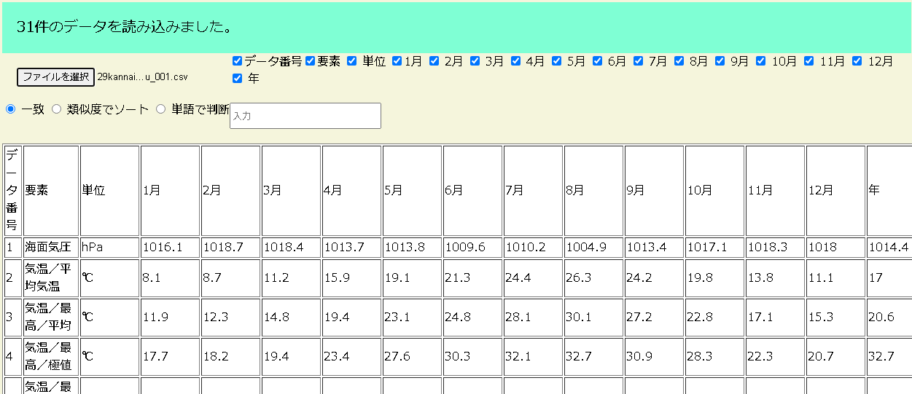

Study myself and Continue studying!
コミュニケーション
幼少期の多数の引っ越しの経験で、初対面でもフランクな交流ができる。学生時代にも様々な団体のリーダーを務めた。
成長
本格的に開発を始めてから日が浅く、様々なことを吸収できる。
勤勉
こまめに物事に取り組む。努力を惜しまず、自ら学んでいく姿勢があります。
Skill
python,html/JavaScript,jQuery/css,sql,(react,php:勉強中)
Portfolio
local版GeoGuesser

大学の主専攻実習にて3人グループで1カ月程度で作成した初めての開発経験。html/JavaScript (jQuery)/cssに初めて触れて開発をはじめ、google maps apiを利用して、比較的動くシステムにまとめることができた。従来のGeoGuesser（https://www.geoguessr.com/)を参考に、地図の表示範囲を指定することで身内で盛り上がれるようなシステム
csvサーチャー

大学のcsv形式の成績データを処理したいという発想から作成したもので、汎用性を上げるためにcsvファイルをインポートできるように1週間ほどで開発した。完全一致検索とレーベンシュタイン距離による類似度計算によるソートシステムを実装した。
飲食店検索

google maps places apiを用いて、飲食店の情報を表示している。カテゴリを入力することで検索できる。